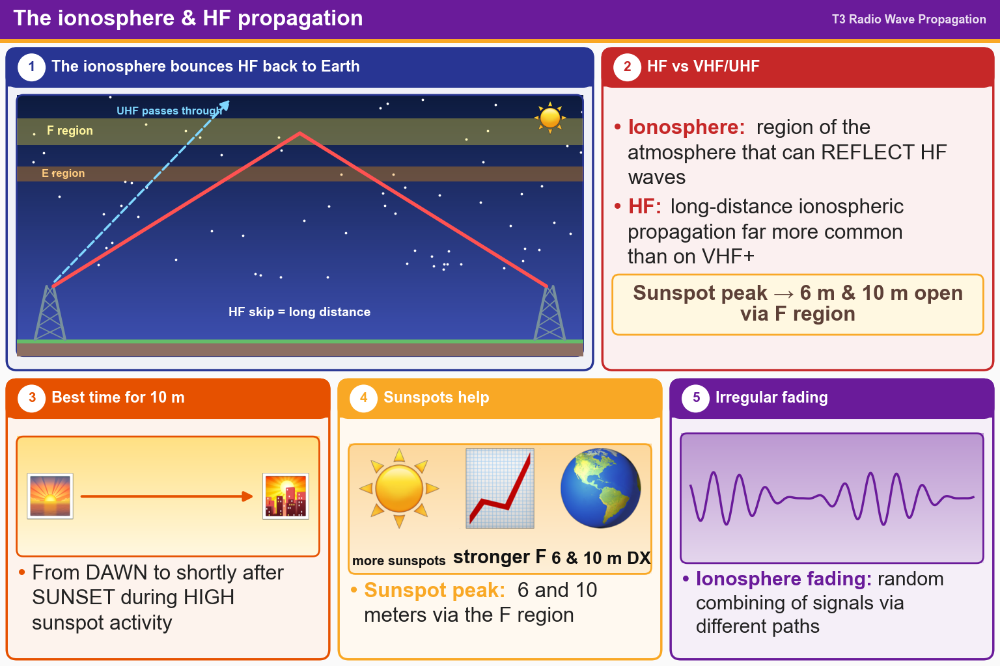

💡 The ionosphere reflects HF. More sunspots = better 10 m and 6 m, from dawn until just after sunset.
Pick an answer for each question, then press Grade at the bottom.
T3A11
Which region of the atmosphere can reflect HF radio waves?
✘A.The electrosphere
✔B.The ionosphere
✘C.The stratosphere
✘D.The troposphere
T3C02
What is a characteristic of HF communication compared with communications on VHF and higher frequencies?
✘A.HF accommodates wider bandwidth signals
✘B.There is less atmospheric interference (static) on HF
✘C.HF antennas are generally smaller
✔D.Long-distance ionospheric propagation is far more common on HF
T3C09
What is generally the best time for long-distance 10-meter band propagation via the F region?
✔A.From dawn to shortly after sunset during periods of high sunspot activity
✘B.From dawn to shortly after sunset during periods of low sunspot activity
✘C.From shortly after sunset to dawn during periods of high sunspot activity
✘D.From shortly after sunset to dawn during periods of low sunspot activity
T3C10
Which of the following bands may provide long-distance communications via the ionosphere’s F region during the peak of the sunspot cycle?
✘A.23 centimeters
✘B.70 centimeters and 1.25 meters
✔C.6 and 10 meters
✘D.All these choices are correct